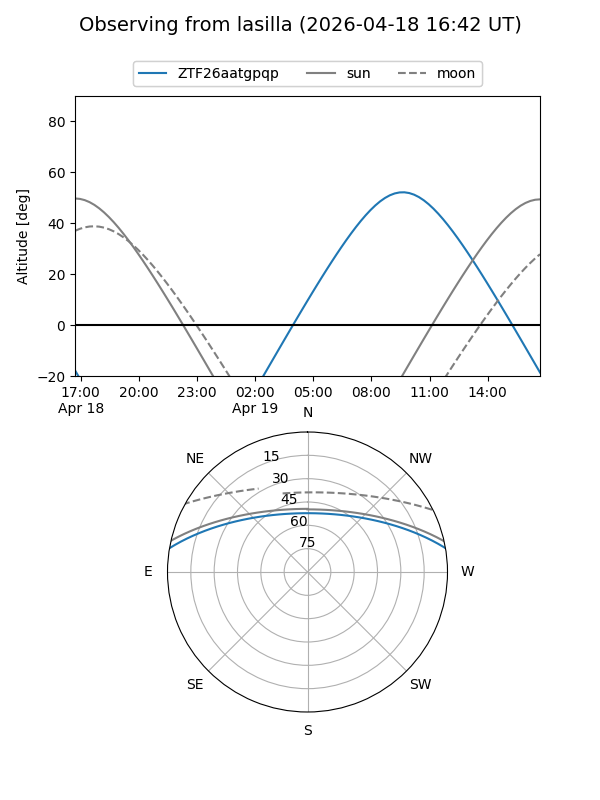
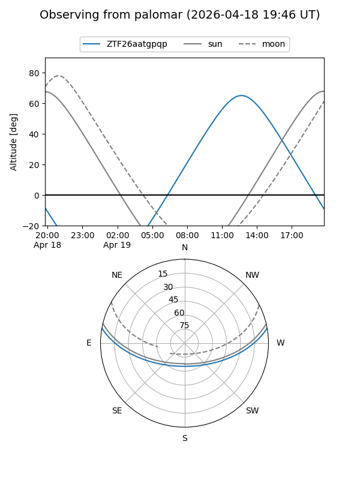

ZTF26aatgpqp
Target ZTF26aatgpqp at 2026-04-18 14:17
Aliases and brokers:
FINK: link
Lasair: link
ALeRCE: link
alt names
ZTF26aatgpqp (ztf,fink_ztf)
Coordinates:
equatorial (ra, dec) = 280.6477,+8.53039
equatorial (HMS+DMS) = 18:42:35.44,+08:31:49.42
galactic (l, b) = (39.5476,+5.83167)
Flags:
Photometry:
last ztfg=19.66
1 ztfg detections
Lightcurve
Visibility


Additional plots